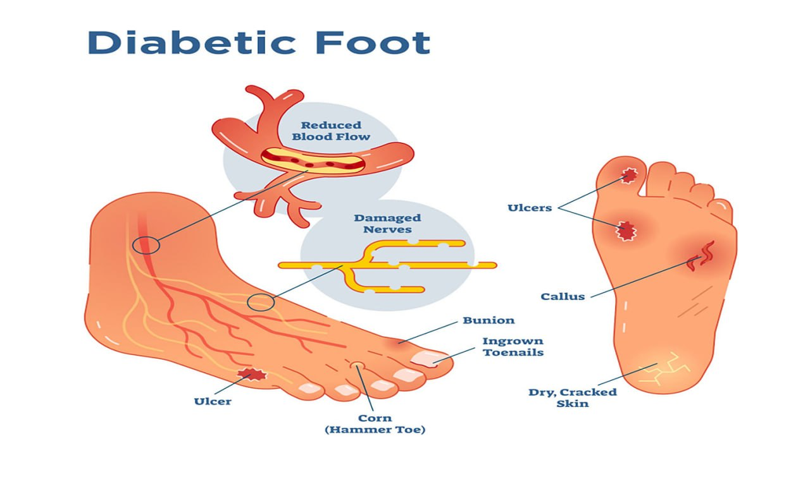
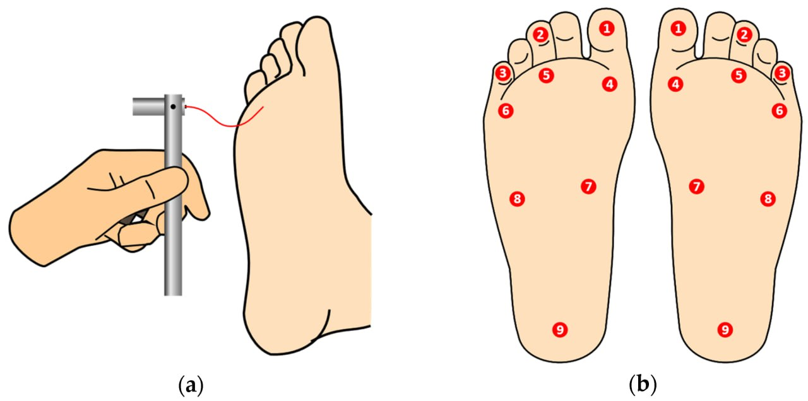
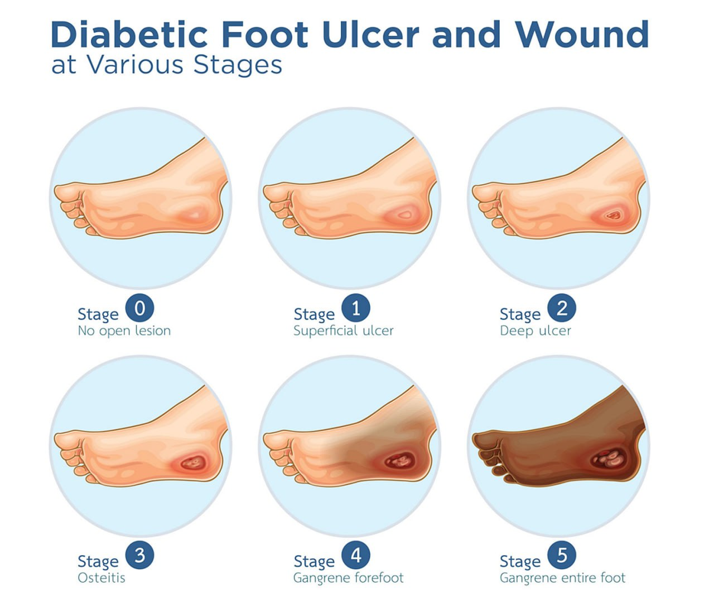
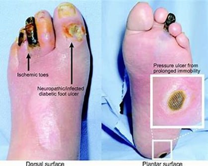
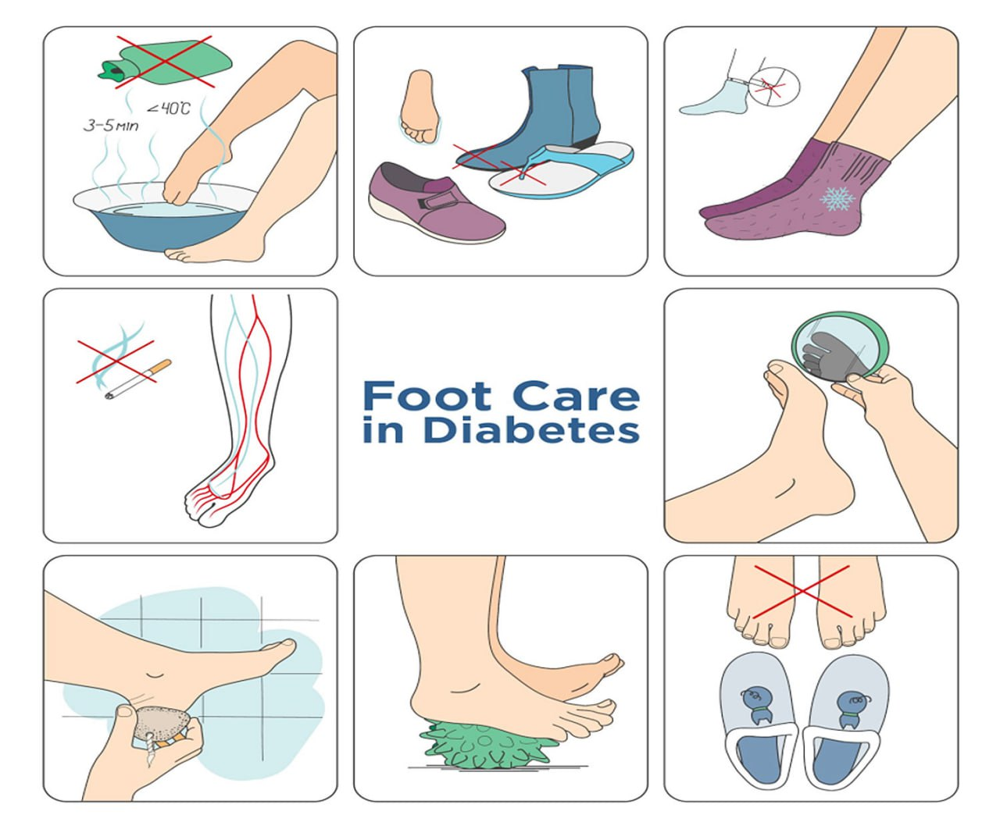

Introduction
Diabetic foot complications are among the most significant and serious health risks for people living with diabetes. With proper management, these complications can be minimized or prevented. The diabetic foot includes a range of issues from neuropathy (nerve damage) to infections and ulcers. Early awareness, diagnosis, and intervention are crucial in preventing severe consequences such as amputations.
Pathophysiology of Diabetic Foot
The pathophysiology of diabetic foot involves a combination of mechanisms that contribute to the development of foot complications in individuals with diabetes. These mechanisms primarily include peripheral neuropathy, peripheral arterial disease (PAD), impaired immune response, and impaired wound healing. The interplay of these factors increases the risk of foot ulcers, infections, and other severe complications. Below is a detailed breakdown of the pathophysiology:
1. Peripheral Neuropathy
Peripheral neuropathy is one of the most common complications of diabetes and plays a major role in the development of diabetic foot issues. It refers to nerve damage caused by prolonged high blood glucose levels, which impair the ability of nerves to transmit signals properly.
Mechanism of Nerve Damage:
High blood glucose levels lead to the accumulation of sorbitol, a sugar alcohol, inside nerve cells, which causes swelling and damage to nerve fibers. Over time, this leads to loss of sensation, particularly in the feet and lower legs. Additionally, hyperglycemia leads to changes in the small blood vessels (vasa nervorum) that supply the nerves, resulting in inadequate blood flow and further nerve degeneration.
Consequences:
- Loss of Sensation: Patients with peripheral neuropathy lose the ability to feel pain, pressure, or temperature changes in their feet. This makes them more susceptible to unnoticed injuries (e.g., cuts, blisters, burns) that can lead to ulcers and infections.
- Motor Neuropathy: Weakening of muscles in the feet and toes can lead to deformities (e.g., hammertoes or Charcot foot) that alter foot biomechanics, causing areas of increased pressure that can lead to ulcers.
2. Peripheral Arterial Disease (PAD)
Peripheral arterial disease (PAD) is another major contributor to diabetic foot complications. PAD refers to the narrowing or blockage of blood vessels that supply the lower extremities, reducing blood flow to the feet and toes.
Mechanism of PAD in Diabetes:
Chronic high blood glucose levels promote the formation of advanced glycation end-products (AGEs), which bind to proteins in blood vessel walls, contributing to atherosclerosis (hardening and narrowing of blood vessels). Additionally, inflammation and endothelial dysfunction (impaired function of the inner lining of blood vessels) further exacerbate the damage to the arterial walls, leading to reduced oxygen and nutrient delivery to the feet.
Consequences:
- Reduced Blood Flow: Decreased circulation leads to poor oxygenation and nutrient supply to the tissues in the foot, impairing wound healing.
- Increased Risk of Infection: Poor blood flow reduces the immune system's ability to fight infections, making even minor injuries more prone to becoming infected.
- Tissue Necrosis and Gangrene: If circulation is severely compromised, tissue death (necrosis) can occur, potentially leading to gangrene and the need for amputation.
3. Impaired Immune Response
In diabetes, there is a reduced ability to fight infections, which contributes to the progression of diabetic foot ulcers and complications.
Mechanism:
Hyperglycemia impairs the function of white blood cells, which are essential for immune defense. Elevated glucose levels reduce the ability of neutrophils and macrophages to migrate to infected areas and effectively combat pathogens. Furthermore, high blood sugar levels contribute to inflammation, which can further impair immune function.
Consequences:
- Increased Risk of Infection: The body's reduced ability to fight infections means that even minor cuts, blisters, or sores are more likely to develop into serious, deep infections.
- Chronic Infection: Diabetic foot infections can become chronic because the body cannot mount an effective immune response, leading to prolonged or recurrent infections that may require antibiotics or even surgical intervention.
4. Impaired Wound Healing
Diabetes causes several disruptions to the normal wound-healing process. The combination of neuropathy, PAD, and impaired immune response makes healing difficult for diabetic foot ulcers.
Mechanisms of Impaired Healing:
- Hyperglycemia and Inflammation: High glucose levels impair the production of collagen and the function of growth factors necessary for tissue repair. Chronic inflammation slows the healing process.
- Reduced Oxygen Delivery: PAD contributes to decreased blood flow, reducing oxygen and nutrient availability at the wound site.
- Impaired Granulation Tissue Formation: Abnormal metabolic environment affects tissue repair processes.
- Decreased Epithelialization: Slowed migration of epithelial cells due to impaired cell signaling.
Consequences:
- Chronic Ulcers: Non-healing ulcers with increased infection risk
- Delayed Healing: Extended recovery time requiring aggressive intervention
5. Foot Deformities
Foot deformities in diabetic patients can occur due to a combination of peripheral neuropathy and PAD.
Charcot Foot:
A serious complication involving breakdown of bones and joints due to unperceived trauma, leading to structural deformities.
Consequences of Foot Deformities:
- Increased Pressure Points: Deformities create ulcer-prone areas
- Altered Biomechanics: Abnormal gait patterns increase injury risk
6. Glycation and Advanced Glycation End-products (AGEs)
AGEs form when excess glucose reacts with proteins/lipids/nucleic acids, accumulating in tissues and blood vessels.
Consequences:
- Impaired Circulation: Vascular stiffness and endothelial dysfunction
- Tissue Damage: Direct harm to skin, nerves, and joints
Summary of Diabetic Foot Pathophysiology
- Neuropathy: Sensory/motor nerve damage leading to injuries/deformities
- Peripheral Arterial Disease: Reduced blood flow impairing healing
- Impaired Immune Response: Compromised infection resistance
- Impaired Wound Healing: Metabolic disruptions delaying recovery
- Foot Deformities: Structural changes increasing ulcer risk
Causes of Diabetic Foot Complications
Several factors contribute to the development of diabetic foot problems, including:
-
Poor Blood Sugar Control
Chronic high blood glucose levels can damage blood vessels and nerves, leading to neuropathy and poor circulation. These factors impair the foot's ability to heal and increase the likelihood of infections.
-
Infection
Bacterial and fungal infections are common due to compromised blood flow and impaired immune responses. Small cuts or blisters that go unnoticed can quickly develop into serious infections.
-
Foot Deformities
Diabetes can lead to changes in foot structure, such as Charcot foot (a condition where bones become weakened and may fracture), causing abnormal pressure and ulcers.
-
Smoking
Smoking further reduces blood flow and exacerbates the complications of peripheral arterial disease.
-
Inadequate Foot Care
Failure to regularly inspect the feet, wear proper footwear, or care for small wounds increases the risk of developing ulcers and infections.
Diagnosis of Diabetic Foot
The diagnosis of diabetic foot complications involves a comprehensive clinical evaluation, including a detailed patient history, physical examination, and a series of tests to assess the extent of damage caused by diabetes. The goal is to identify any signs of infection, neuropathy, peripheral arterial disease (PAD), or ulcers that could lead to serious complications such as amputation.
1. Clinical History and Physical Examination
Clinical History:
- Blood Sugar Control: HbA1c levels, insulin use, oral hypoglycemics
- Foot Care History: Frequency of inspections, footwear use, prior foot problems
- Symptoms of Neuropathy: Tingling, burning, numbness, or pain in feet
- Previous Foot Problems: History of ulcers, amputations, or infections
Physical Examination:
- Skin changes (redness, warmth, swelling, blisters)
- Foot deformities (hammertoes, bunions, Charcot foot)
- Signs of infection (pus, fever, increased pain)
- Vascular and neurological assessment
2. Monofilament Test
Procedure:
10g Semmes-Weinstein monofilament applied to 10 foot sites
Interpretation:
Failure to sense at >2 sites indicates sensory neuropathy
3. Vascular Assessment
Ankle-Brachial Index (ABI):
Procedure: Compare ankle/arm blood pressure
Interpretation:
- ABI <0.9: PAD
- ABI 0.5-0.9: Moderate PAD
- ABI <0.5: Severe PAD
Doppler Ultrasound:
Procedure: Sound waves to measure blood flow
Interpretation: Reduced flow indicates PAD
Pulse Palpation:
Procedure: Manual pulse check (dorsalis pedis/posterior tibial)
Interpretation: Weak/absent pulses indicate poor circulation
4. Tuning Fork Test
Procedure:
128 Hz tuning fork on bony prominences
Interpretation:
Inability to feel vibration suggests neuropathy
5. Laboratory Tests
| Test | Normal Range | Interpretation |
|---|---|---|
| Hemoglobin A1c | 4.0% - 5.6% | >6.5% indicates poor control |
| Complete Blood Count | WBC: 4,000-11,000 cells/μL | Elevated: Infection |
| Men Hb: 13.8-17.2 g/dL Women Hb: 12.1-15.1 g/dL |
Low: Anemia | |
| Platelets: 150,000-450,000 cells/μL | Abnormal: Clotting issues | |
| C-Reactive Protein | <3.0 mg/L | Elevated: Inflammation/Infection |
| Blood Glucose | Fasting: 70-100 mg/dL Postprandial: <140 mg/dL |
>126 mg/dL (fasting) indicates poor control |
| Serum Creatinine | Men: 0.7-1.3 mg/dL Women: 0.6-1.1 mg/dL |
Elevated: Renal dysfunction |
| Wound Culture | No growth | Positive: Infection present |
| Procalcitonin | <0.1 ng/mL | Elevated: Bacterial infection |
| X-Ray | No bone involvement | Erosion/abscess suggests osteomyelitis |
6. Imaging Studies
X-Rays:
- Purpose: Detect bone infections/deformities
- Findings: Osteomyelitis shows bone erosion
MRI:
- Purpose: Soft tissue/bone detailed imaging
- Findings: Detects deep infections/abscesses
7. Wound Culture
- Procedure: Sample from ulcer bed
- Interpretation: Identifies pathogenic bacteria
8. Skin Biopsy (Rare)
Used for atypical ulcers to rule out malignancy or unusual infections
Summary of Diagnostic Methods
- Monofilament Test - Sensory neuropathy assessment
- ABI/Doppler - Vascular evaluation
- Laboratory Tests - Infection/glucose control monitoring
- Imaging - Bone/soft tissue infection detection
- Wound Culture - Pathogen identification
Complications of Diabetic Foot
Diabetic foot complications are a leading cause of disability in individuals with diabetes. These complications can range from minor issues to severe conditions requiring surgical intervention, including amputations. The primary factors that contribute to diabetic foot complications are peripheral neuropathy (nerve damage) and peripheral arterial disease (PAD), both of which are common in people with poorly controlled diabetes. Below are the key complications associated with diabetic foot:
-
Neuropathic Ulcers
- Description: Open sores or wounds on the foot caused by the loss of sensation due to nerve damage
- Impact: Can become deep and lead to severe tissue damage or amputation if untreated
- Management: Early detection, regular foot inspections, proper wound care, offloading
-
Infections
- Description: Significant risk due to poor circulation and compromised immune function
-
Types:
- Cellulitis - Skin infection causing redness, swelling, and pain
- Osteomyelitis - Bone infection from spreading infection
- Gangrene - Tissue death from severe infection/poor circulation
- Impact: Can lead to sepsis or amputation
- Management: Prompt antibiotics, wound care, surgical debridement
- 
-
Charcot Foot
- Description: Bone weakening and deformation from unperceived trauma
- Impact: Severe deformities and mobility disability
- Management: Immobilization with casts/braces, preventive care
-
Peripheral Arterial Disease (PAD)
- Description: Narrowed blood vessels reducing foot circulation
- Impact: Impaired healing, tissue necrosis
- Management: Smoking cessation, medications (cilostazol), revascularization surgery
-
Foot Deformities
- Types: Hammertoes, bunions, Charcot foot deformities
- Impact: Pressure points leading to ulceration
- Management: Custom orthotics, therapeutic footwear, corrective surgery
-
Amputation
- Description: Surgical removal of necrotic tissue/limb
- Impact: Permanent mobility impairment
- Prevention: Strict glucose control, regular foot checks
-
Blisters and Calluses
- Description: Friction-induced skin lesions
- Risk: Potential ulcer precursors
- Management: Protective padding, proper footwear
-
Dry Skin and Fungal Infections
- Description: Common in diabetic patients due to poor circulation
- Impact: Cracked skin, secondary infections
- Management: Regular moisturizing, antifungal treatments
-
Hyperglycemia and Poor Wound Healing
- Mechanism: Impaired immune function and tissue repair
- Impact: Chronic non-healing ulcers
- Management: Tight glucose control (HbA1c <7%)
Pharmacological Treatment for Diabetic Foot Complications
Pharmacological treatment for diabetic foot complications primarily involves managing infections, controlling blood glucose levels, promoting wound healing, and addressing any underlying issues like poor circulation or neuropathy.
1. Blood Glucose Management
Proper blood glucose control is fundamental in managing diabetic foot complications. Chronic hyperglycemia (high blood sugar) contributes to poor circulation, nerve damage, and delayed wound healing.
Medications:
- Insulin:
- Types: Short-acting, long-acting, intermediate-acting
- Administration: Injections or pumps
- Oral Hypoglycemics:
- Metformin - Reduces hepatic glucose production
- Sulfonylureas (Glipizide, Glyburide) - Stimulate insulin release
- GLP-1 Agonists (Liraglutide, Semaglutide) - Enhance insulin secretion
- SGLT2 Inhibitors (Empagliflozin) - Reduce renal glucose reabsorption
- DPP-4 Inhibitors (Sitagliptin) - Enhance incretin hormones
Target Glucose Levels:
- Fasting: 80-130 mg/dL
- Postprandial: <180 mg/dL
- HbA1c: <7%
2. Antibiotics
| Infection Type | Antibiotics | Duration |
|---|---|---|
| Broad-Spectrum | Amoxicillin-clavulanate, Piperacillin-tazobactam | 1-2 weeks (oral) |
| Gram-positive | Cephalexin, Clindamycin | 4-6 weeks (IV for severe) |
| Gram-negative | Ciprofloxacin, Gentamicin | |
| Anaerobic | Metronidazole | |
| MRSA | Vancomycin, Linezolid |
3. Pain Management
- NSAIDs: Ibuprofen, Naproxen (use cautiously)
- Acetaminophen: First-line for mild pain
- Opioids: Morphine, Oxycodone (severe pain)
- Topical: Lidocaine patches
- Neuropathic: Gabapentin, Pregabalin
4. Wound Healing Promotion
- Growth Factors: Becaplermin gel
- Dressings:
- Hydrocolloids - Maintain moisture
- Hydrogels - Autolytic debridement
- Silver-based - Antimicrobial
- Advanced Therapies: VAC/NPWT systems
5. Circulation Improvement
- Vasodilators:
- Pentoxifylline - Improves blood flow
- Cilostazol - Increases walking distance
- Surgical: Angioplasty, bypass procedures
6. Anti-thrombotic Therapy
- Aspirin (75-325 mg/day)
- Clopidogrel (75 mg/day)
7. Neuropathy Management
- Gabapentin (300-1200 mg 3x/day)
- Amitriptyline (25-150 mg/day)
- Duloxetine (60 mg/day)
8. Antifungal Treatment
- Topical: Clotrimazole, Miconazole
- Oral: Fluconazole, Itraconazole
9. Supplements
- Vitamin C (500-1000 mg/day)
- Zinc (15-30 mg/day)
- Vitamin A (10,000 IU/day)
Healing Diabetic Foot Ulcers: A Comprehensive Guide
Diabetic foot ulcers are a serious complication of diabetes, often resulting from poor blood sugar control, peripheral neuropathy, and poor circulation. When left untreated, they can lead to severe infections, tissue loss, or even amputations. However, with early detection, proper care, and appropriate treatments, diabetic foot ulcers can heal effectively and prevent further complications.
Step 1: Blood Sugar Control
Target Levels:
- Fasting: 80-130 mg/dL
- Postprandial: <180 mg/dL
- HbA1c: <7%
Management Strategies:
- Adherence to prescribed medications
- Low glycemic index diet
- Regular physical activity
- Frequent glucose monitoring
Step 2: Wound Care & Ulcer Management
Cleaning Protocol
- Saline/mild soap solution
- Debridement methods:
- Autolytic
- Enzymatic
- Surgical
Dressing Selection
- Hydrocolloids: Moderate exudate
- Hydrogels: Dry necrosis
- Alginates: Heavy exudate
- Silver-based: Infected wounds
Protection Measures
- Offloading devices:
- Custom shoes
- Cushioned insoles
- Removable casts
- Proper footwear fitting
Step 3: Infection Management
Recognition Signs
- Erythema & swelling
- Purulent discharge
- Increased pain
- Systemic fever
Treatment Approaches
- Empiric antibiotics → Culture-directed
- Topical antiseptics:
- Silver sulfadiazine
- Povidone-iodine
- Surgical interventions
Step 4: Circulation Improvement
- Vascular surgery (angioplasty/bypass)
- Cilostazol therapy
- Smoking cessation programs
Step 5: Deformity Management
Orthotic Devices
- Custom-molded inserts
- Pressure-relief insoles
Surgical Options
- Bone realignment
- Joint stabilization
Footwear
- Extra-depth shoes
- Custom orthopedic shoes
Step 6: Nutritional Support
Essential Nutrients
- Vitamin C - Collagen synthesis
- Zinc - Tissue repair
- Protein - 1.2-1.5g/kg/day
- Omega-3s - Anti-inflammatory
Dietary Plan
- Balanced Mediterranean diet
- Hydration monitoring
- Nutritionist consultation
Step 7: Monitoring & Follow-up
- Weekly wound measurements
- Bi-weekly professional assessments
- Monthly vascular evaluations
Step 8: Prevention Strategies
Daily Foot Care
- Visual inspection
- Gentle cleansing
- Moisturizing
Protective Measures
- Diabetic socks
- Temperature monitoring
- Pressure avoidance
Long-term Management
- Continuous glucose monitoring
- Podiatrist follow-ups
- Patient education programs
References
- World Health Organization. (2020). Global report on diabetes. WHO. Retrieved from https://www.who.int/news-room/fact-sheets/detail/diabetes
- World Health Organization. (2016). Diabetes Fact Sheet. WHO. Retrieved from https://www.who.int/news-room/fact-sheets/detail/diabetes
- European Association for the Study of Diabetes. (2019). EASD Position Statement on Diabetic Foot. European Diabetes Research. Retrieved from https://www.easd.org
- American Diabetes Association. (2023). Standards of Medical Care in Diabetes – 2023. Diabetes Care, 46(Supplement 1), S1–S274.
- Reiber, G. E., & Pecoraro, R. E. (2017). The Epidemiology of Diabetic Foot Problems: New Insights and Preventive Strategies. Journal of Clinical Endocrinology & Metabolism, 102(3), 895–907.
- Singh, N., Armstrong, D. G., & Lipsky, B. A. (2020). Preventing Foot Ulcers in Patients with Diabetes. JAMA, 313(2), 137–145.
- American Diabetes Association. (2023). Standards of Medical Care in Diabetes – 2023. Diabetes Care, 46(Supplement 1), S1–S274.
- American Diabetes Association. (2022). Diabetes Care. Diabetes Care, 45(1), 1-28. https://doi.org/10.2337/dc22-S000
- Hsu, C. C., & Chao, T. F. (2021). Complete blood count and its role in the assessment of infection in diabetic foot ulcers. Diabetic Foot & Ankle, 12(1), 197-201.
- Iwata, H., & Shirota, T. (2019). White blood cell count in patients with diabetic foot infections. Journal of Diabetes and its Complications, 33(3), 212-219. https://doi.org/10.1016/j.jdiacomp.2018.12.006
- Qureshi, A. (2017). Renal function and its impact on diabetic foot complications. Journal of Diabetes Research, 2017, 123-127. https://doi.org/10.1155/2017/4953672
- Kasiske, B. L., & Weir, M. R. (2017). Kidney disease and diabetic foot ulcers. Kidney International, 91(1), 23-29. https://doi.org/10.1016/j.kint.2016.10.038
- Lipsky, B. A., & Hoey, C. (2020). Diabetic Foot Infections: Diagnosis and Management. The Lancet Infectious Diseases, 20(3), e41-e51. https://doi.org/10.1016/S1473-3099(19)30405-6
- Reiber, G. E., & Pecoraro, R. E. (2017). The epidemiology of diabetic foot problems: New insights and preventive strategies. Journal of Clinical Endocrinology & Metabolism, 102(3), 895-907. https://doi.org/10.1210/jc.2016-3524
- Faglia, E., & Clerici, G. (2021). Ankle-brachial index in the assessment of peripheral arterial disease in diabetic patients. Journal of Vascular Surgery, 73(4), 973-979. https://doi.org/10.1016/j.jvs.2020.07.062